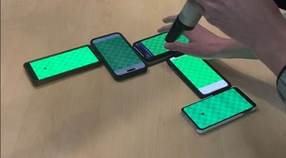

Welcome to Multigolf 2! Here you can play Minigolf games across a board made up of multiple phones! To play, you'll need at least 2 (the more the better!) phones. You won't need to install anything anywhere, this all just runs in your browser! After starting the game, everyone will have to simply scan a QR code and start designing the perfect multigolf course!
How does it work?
When you start the game, your phone will become the host. All phones will connect to your phone by scanning a QR code. From then, you will be asked to construct a minigolf course by physically arranging your phones. Naturally, you'll also be able to spice your course up with fun obstacles to make increase the difficulty (and fun). And then you'll play! You'll take turns golfing your balls into the hole while this phone will serve as an info screen to keep track of scores and will enable you to configure things. Once round 1 is finished, the next player will be asked to build their course, such that at the end, every player will have been the course constructor once. Finally, a winner will be chosen and deemed king/queen of Multigolf. Doesn't that sound just a little fun?
Okay, but how does it work technologically?
Well. Thanks for asking! When you start the game, this phone will create a QR code with which others will join and form connections via WebRTC. From then on, the host will manage the Multigolf game, deciding which ball flies where in which second. Participating phones send updates to the host phone which will react accordingly and potentially send updates to all connected clients, connecting the phones and making balls fly through phone screens seemlessly. Of course, theres a custom physics engine distributed on all phones that makes sure that everything happens smoothly. And at the end, balls just phase from phone screen to screen without much lag. It's kinda satisfying to watch. You should try it.
